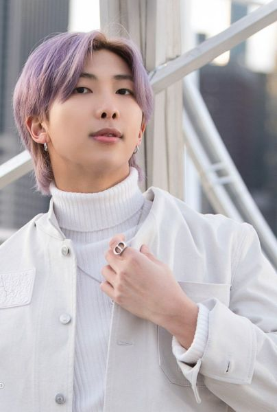
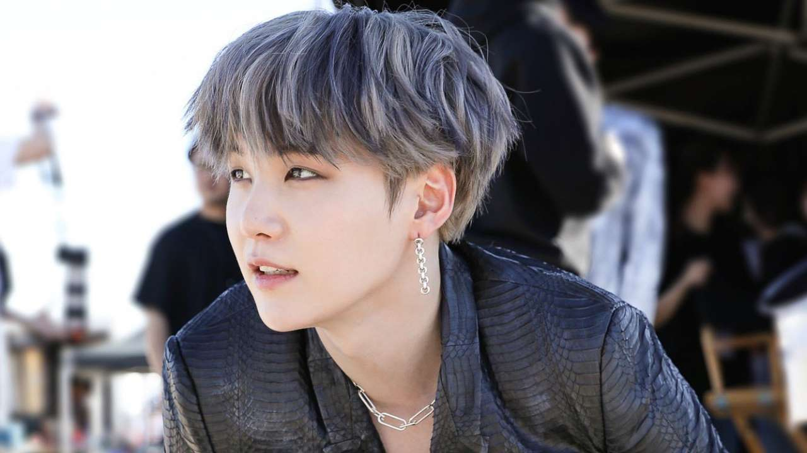
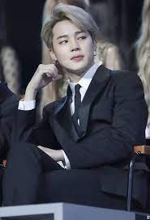

BTS er den mest kjente og beste gruppen i hele varden.BTS har 7 members og slapp ut sin første sang i 13.06.2013. de har slått MANGE verdensrekorder før og har fått mange Grammy nominasjoner før. i 2014 disbanda de nesten siden de ikke hadde nok penger til å fortsette, men så slapp de ut sangen "i need u" og den gikk viral så de kunne fortsette og nå er de verdens kjente. og jeg tror de har rokorden for hovr hange awards de har vunnet. jeg klarer ikke å holde tellinga engang. og jeg har stana dem i over 4 år og kan i hvertfall en del av ALLE dansene dems og kan alle sangene dems som egentlig er ganske trist.

RM er ledern og main rapper i bts. det ekte navne hans er Kim Nam-Joon og han har mange kallenavn men bruker RM som stage navn. han er den 4 eldste i gruppen altså han er middel child selv om bts ikke er i familie. han er helt flytende i engelsk. han lærte engelsk fra serien Friends. moren han hadde kjøpt dvd-er til han på koreansk og engelsk. han studerte engelsk fra serien. jeg kunne ha sagt mer men jeg har ikke nok tid.
Jin er sub vocalist og visual i gruppen. det ekte navne hans er Kim Seok-Jin og han han mange kallenanvn men bruker Jin som stage navn. han er den eldste i gruppen. jin liker disney prinsesser og mer men han er VELDIG god på å lage mat. han har også de beste dad jokene. jeg kunne ha sagt mer men det har jeg ikke tid til.

Suga er lead rapper i gruppen og er en av de raskeste rapperne. det ekte navne til Suga er Min Yoon-Gi og han har mange kallenavn men bruker Suga som stage navn. Suga er den nest eldste i gruppen. Suga har laget mange solo sanger som en soloist og blir kalt Agust D når han rapper solosanger. jeg kunna ha sagt mer men det har jeg ikke tid til.
J-hope er main dancer, sub rapper og sub vocalist. det ekte navne til J-hope er Jung Ho-Seok og han har mange kallenavn men bruker J-hope som stage navvn. J-hope er den tredje eldste i gruppen. J-hope elsker dansing veldig høyt og han er idole mitt i dans. han er sunshine-en i gruppen. jeg kunne ha sagt mer men det har jeg ikke tid til.

Jimin er main dancer og lead vocalist. det ekte navnet til Jimin er Park Ji-Min og han har mange kallenavn men han bruker Jimin som stagenavn. jimin er den tredje yngste i gruppen. jimin pleide å gå på ballet før han kom inn i BTS og han var veldig god på det. jeg kunne ha sagt mer men det har jeg ikke tid til.
V er Lead Dancer, Sub Vocalist og Visual i gruppen. det ekte navnet til V er Kim Tea-Hyung og har mange kallenavn men han bruker V som stagenavn. V er den andre yngste i gruppen. han er også en skuspiller. jeg kunne ha sagt mer men det har jeg ikke tid til.
Jungkook er Main Vocalist, Lead Dancer, Sub Rapper, Center og Maknae i gruppen. maknae betyr den yngte i gruppen og jungkook er den yngste. det ekte navne til Jungkook er Jeon Jung-Kook og har mange kallenavn men han bruker Jungkook som stage navn. jeg kunne ha sagt mer men det har jeg ikke tid til.